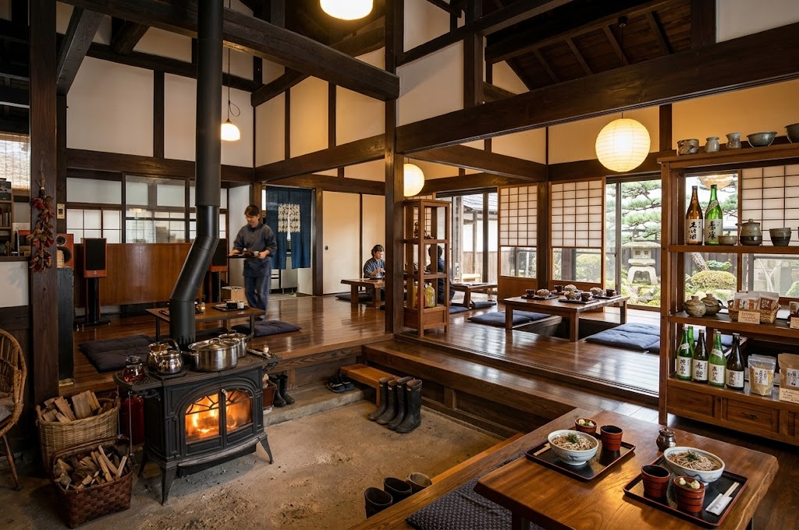
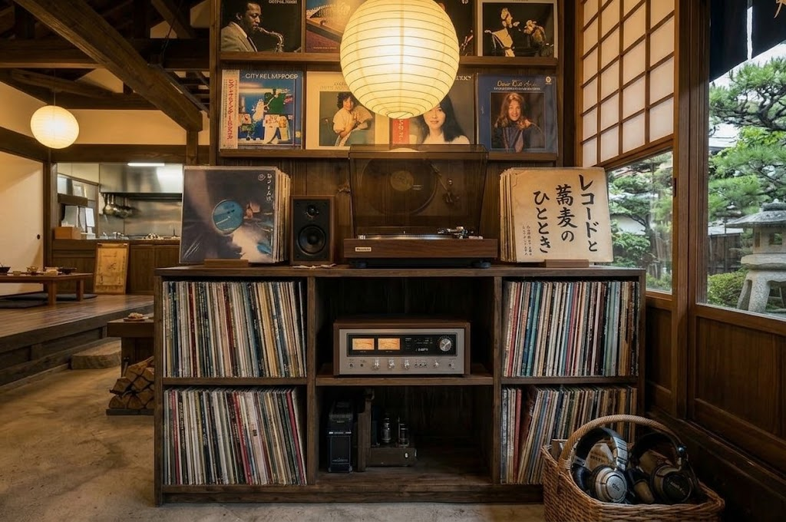
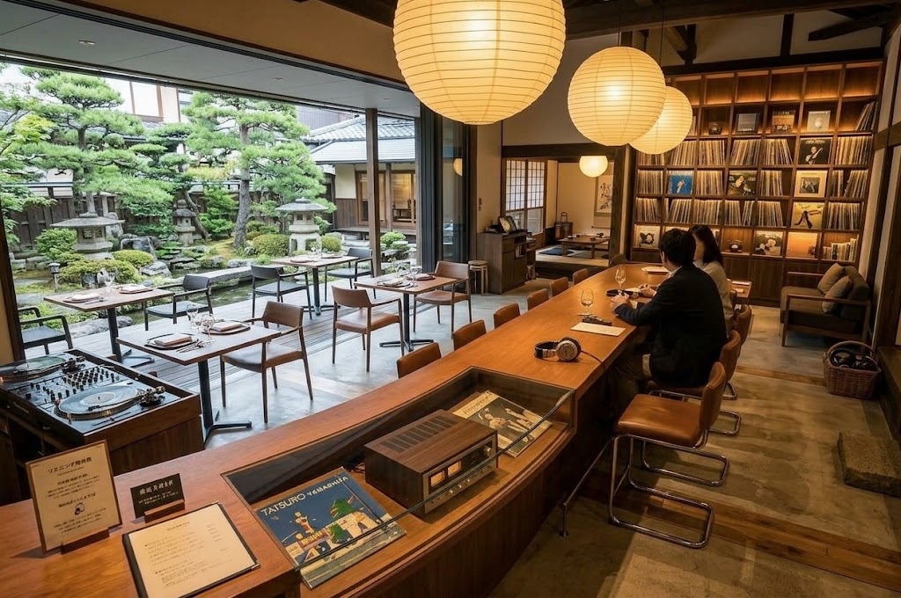
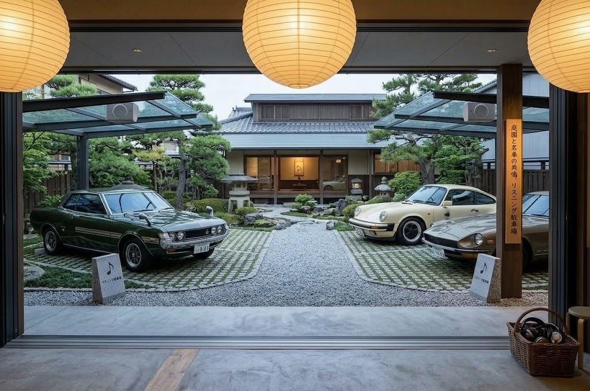

海老が大きく存在感のある、看板の海老天丼。
レコードが並ぶレトロモダンな古民家で、
がっつり天童ご飯を味わう。
天童市高擶、黒板塀の続くエリアに佇む古民家食堂。
レコードが並ぶ、風情とモダンさが同居する空間。
古民家を改装した風情ある店内で、
レトロ・モダンな外観、レコードが並ぶおしゃれな空間が広がります。
リニューアル後は「天丼」を中心としたメニュー構成で、
がっつり食べられるランチとして親しまれています。
大きな海老が存在感抜群。衣が重すぎず食べやすいと評判の看板メニュー。
レコードが並ぶレトロモダンな空間。黒板塀の続く高擶地区に佇む一軒家。
店舗前に普通車約12台分の駐車スペース完備。車での来店も安心です。
大きな海老の存在感、衣は重すぎず食べやすい。
古民家の空間で味わう、がっつり天童ご飯。
リニューアル後、メニューは「天丼」を中心に構成されていると紹介されており、最も訴求しやすい主力商品です。海老が大きく存在感があり、衣が重すぎないタイプで食べやすいと評価されています。
古民家の雰囲気とレトロモダンな空間の中で、天丼ランチとして「がっつり天童ご飯」的な体験を提供できる点も特徴。風情ある店内でゆっくりと味わえる一品です。
天丼を中心とした構成に一新。最も訴求しやすい看板商品として紹介されています。
存在感のある海老と、重すぎない衣のバランス。食べやすさが評価されています。
レトロモダンな空間の中で楽しむ天丼ランチ。風情ある店内での特別な食体験。
レコードが並ぶ、レトロモダンな古民家の空間。
黒板塀の続く高擶地区の風情もご紹介。




天童市高擶北、黒板塀の続くエリア。
駐車場完備、昼のみ営業。
クレジットカードはご利用いただけません。現金のほか、PayPay・au PAYがご利用いただけます。
海老が大きく存在感のある、看板の海老天丼。
レコードが並ぶレトロモダンな古民家で、
がっつり天童ご飯を味わってください。
※営業時間: 11:00〜14:00（昼のみ）
※定休日: 木曜日（臨時休業あり）
※カード不可、PayPay・au PAY対応